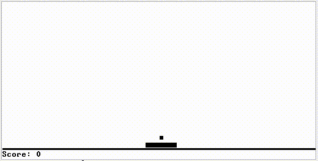

nand2tetris in R
- Webアプリケーションエンジニア
- Rで変なものを作る 人
質問
プログラムが動く仕組みを説明できますか？
あなたの書いたコードは単なる文字に過ぎない
a = 40 + 2どういう仕組みで解釈され、計算されるのか
a = 40 + 2
「コンピュータを理解するための最善の方法はゼロからコンピュータを作ることです。」
コンピュータシステムの理論と実装
通称 nand2tetris (Nand to Tetris)
コンピュータの構成要素
- ハードウェア
- ソフトウェア
- コンパイラ
- OS
をひとつずつ実装していく
NANDゲートから始まって
最終的にゲームが動くようになるよ

(Nand to Tetrisと言いつつテトリスではない)
本に登場する階層のうち
| アプリケーション |
| OS |
| コンパイラ |
| バーチャルマシン |
| アセンブラ |
| 機械語 |
| ハードウェア |
これらをRで実装
| コンパイラ |
| バーチャルマシン |
| アセンブラ |
順に紹介します。
1. アセンブラ
| アプリケーション |
| OS |
| コンパイラ |
| バーチャルマシン |
| アセンブラ |
| 機械語 |
| ハードウェア |
アセンブラ
アセンブリ言語をバイナリに変換する
アセンブリ言語を
@2
D=A
@3
D=D+A
@0
M=Dバイナリに変換
0000000000000010
1110110000010000
0000000000000011
1110000010010000
0000000000000000
1110001100001000ハードウェアに対する命令なので低水準
@2
D=A
@3
D=D+A
@0
M=Dちなみにこれは 2 + 3 を計算するコード
Rによるアセンブラの実装
2. バーチャルマシン
Virtual Machine (VM)
抽象化されたコンピュータ
この本で作るのはVM変換器 (VM translator)
VMコードをアセンブリコードに変換する
| アプリケーション |
| OS |
| コンパイラ |
| バーチャルマシン |
| アセンブラ |
| 機械語 |
| ハードウェア |
2 + 3 を計算するVMコード
push constant 2
push constant 3
addアセンブリより読みやすい
スタックマシン (stack machine)
という計算モデル
RによるVM変換器の実装
3. コンパイラ
高級言語をVMコードに変換する
| アプリケーション |
| OS |
| コンパイラ |
| バーチャルマシン |
| アセンブラ |
| 機械語 |
| ハードウェア |
Jack言語のコード
class Main {
function void main() {
do Output.printString("Hello world!");
do Output.println();
return;
}
}普通に読める
コンパイルの流れ
- 字句解析
- 構文解析
- コード生成
字句解析
トークンに分割する
a = 40 + 2 をトークンに分割
> jackanalyzer::tokenize("a = 40 + 2")
[[1]]
$identifier
[1] "a"
attr(,"class")
[1] "identifier_token" "token"
[[2]]
$symbol
[1] "="
attr(,"class")
[1] "symbol_token" "token"
[[3]]
$int_val
[1] 40
attr(,"class")
[1] "int_const_token" "token"
[[4]]
$symbol
[1] "+"
attr(,"class")
[1] "symbol_token" "token"
[[5]]
$int_val
[1] 2
attr(,"class")
[1] "int_const_token" "token" 構文解析
文法にそって解釈する
a = 40 + 2 の構文木

コード生成
ターゲット言語のコードを生成する
(時間がないので詳細は略)
RによるJackコンパイラの実装
コンパイル結果のVMコードは、公式サイトで公開されているVMエミュレータで実行できる

demo
実装にかかった行数
| 行数 | |
|---|---|
| アセンブラ | 206 |
| VM変換器 | 323 |
| コンパイラ | 788 |
強力な抽象は実装が大変
| 行数 | |
|---|---|
| アセンブラ | 206 |
| VM変換器 | 323 |
| コンパイラ | 788 |
実装のこつ
テストを書こう

楽をするためにテストを書く
一度テストを書けばいつでもプロジェクト全体をテストできる
常に自分の変更に自信が持てるようになる
パッケージを作ろう


パッケージにすればコードを楽に再利用できる
自分しか使わないとしてもパッケージにする価値はある
devtoolsでコードのリロード、テスト実行が簡単
namespaceを分離できる
assembler::parse()
vmtranslator::parse()
jackanalyzer::parse()Rパッケージ開発入門を読もう。
原著の第2版がwebで読めるよ。
まとめ
アセンブラ、VM、コンパイラをRで実装した。
自分で作ることで
その仕組みを深く理解できる。
作る
動かす
理解する
プログラミングは楽しい！